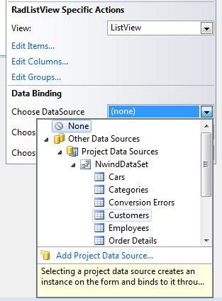
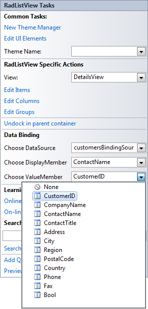

Databinding
DataBinding
Data binding provides a way to bind the display of data in a RadListView to a data source.
Three properties control the data binding:
DataSource - Specifies the source of the data to be bound.
DisplayMember - Specifies the particular data to be displayed in a RadListView.
ValueMember - Specifies the particular data to be returned as the value of a RadListView.

You can set the DataSource property either in the
Properties windows of Visual Studio or in the Smart Tag
menu of RadListView. To set the DataSource, select the
DataSource property and click the drop-down arrow to display all existing
data sources on the form. Click the Add Project Data Source link and follow
the instructions in the Data Source Configuration Wizard to add a data source
to your project. You can use databases, web services, or objects as data sources.
When you set the DataSource property, you can choose a
DisplayMember and ValueMember.
The DisplayMember specifies the particular data to be displayed in RadListView’s items.
The ValueMember specifies the particular data to be returned by the Value property in RadListView’s items.

Manipulating Columns
When you bind RadListView to a collection of business objects and select its ViewType
to be DetailsView, the values of all the properties of the business objects will
be displayed in columns.
By handling the ColumnCreating event you can manipulate the size, the visibility
and other properties of the columns:
[C#] Column creating
void radListView1_ColumnCreating(object sender, Telerik.WinControls.UI.ListViewColumnCreatingEventArgs e)
{
if (e.Column.FieldName == "CustomerID" || e.Column.FieldName == "ParentID")
{
e.Column.Visible = false;
}
if (e.Column.FieldName == "CompanyName")
{
e.Column.HeaderText = "Company";
}
if (e.Column.FieldName == "ContactName")
{
e.Column.HeaderText = "Contact";
}
}
[VB.NET] Column creating
Private Sub RadListView1_ColumnCreating(ByVal sender As Object, ByVal e As ListViewColumnCreatingEventArgs) Handles RadListView1.ColumnCreating
If e.Column.FieldName = "CustomerID" OrElse e.Column.FieldName = "ParentID" Then
e.Column.Visible = False
End If
If e.Column.FieldName = "CompanyName" Then
e.Column.HeaderText = "Company"
End If
If e.Column.FieldName = "ContactName" Then
e.Column.HeaderText = "Contact"
End If
End Sub
Programatically Data binding
The following tutorial will demonstrate how to bind a RadListView to a list of business objects.
First let's create our business object. Note that it is important that our custom object implements the INotifyPropertyChanged interface, since this
will allow notifications between the object and the control:
[C#] Person class
public class Person : INotifyPropertyChanged
{
private int _id;
private string _name;
private string _address;
private DateTime _dateOfBirth;
private Image _picture;
public event PropertyChangedEventHandler PropertyChanged;
public Person(int Id, string Name, string Address, DateTime DateOfBirth, Image Picture)
{
this._id = Id;
this._name = Name;
this._address = Address;
this._dateOfBirth = DateOfBirth;
this._picture = Picture;
}
public int ID
{
get
{
return this._id;
}
set
{
if (this._id != value)
{
this._id = value;
OnPropertyChanged("ID");
}
}
}
public string Name
{
get
{
return this._name;
}
set
{
if (this._name != value)
{
this._name = value;
OnPropertyChanged("Name");
}
}
}
public string Address
{
get
{
return this._address;
}
set
{
if (this._address != value)
{
this._address = value;
OnPropertyChanged("Address");
}
}
}
public DateTime DateOfBirth
{
get
{
return this._dateOfBirth;
}
set
{
if (this._dateOfBirth != value)
{
this._dateOfBirth = value;
OnPropertyChanged("DateOfBirth");
}
}
}
public Image Picture
{
get
{
return this._picture;
}
set
{
if (this._picture != value)
{
this._picture = value;
OnPropertyChanged("Picture");
}
}
}
protected virtual void OnPropertyChanged(string propertyName)
{
if (PropertyChanged != null)
{
PropertyChanged(this, new PropertyChangedEventArgs(propertyName));
}
}
}
[VB.NET] Person class
Public Class Person
Private _id As Integer
Private _name As String
Private _address As String
Private _dateOfBirth As DateTime
Private _picture As Image
Public Event PropertyChanged As PropertyChangedEventHandler
Public Sub New(Id As Integer, Name As String, Address As String, DateOfBirth As DateTime, Picture As Image)
Me._id = Id
Me._name = Name
Me._address = Address
Me._dateOfBirth = DateOfBirth
Me._picture = Picture
End Sub
Public Property ID() As Integer
Get
Return Me._id
End Get
Set(value As Integer)
If Me._id <> value Then
Me._id = value
OnPropertyChanged("ID")
End If
End Set
End Property
Public Property Name() As String
Get
Return Me._name
End Get
Set(value As String)
If Me._name <> value Then
Me._name = value
OnPropertyChanged("Name")
End If
End Set
End Property
Public Property Address() As String
Get
Return Me._address
End Get
Set(value As String)
If Me._address <> value Then
Me._address = value
OnPropertyChanged("Address")
End If
End Set
End Property
Public Property DateOfBirth() As DateTime
Get
Return Me._dateOfBirth
End Get
Set(value As DateTime)
If Me._dateOfBirth <> value Then
Me._dateOfBirth = value
OnPropertyChanged("DateOfBirth")
End If
End Set
End Property
Public Property Picture() As Image
Get
Return Me._picture
End Get
Set(value As Image)
If Me._picture IsNot value Then
Me._picture = value
OnPropertyChanged("Picture")
End If
End Set
End Property
Protected Overridable Sub OnPropertyChanged(propertyName As String)
RaiseEvent PropertyChanged(Me, New PropertyChangedEventArgs(propertyName))
End Sub
End Class
Then we create a collection of our objects. The collection should implement IBindingList to support notifications. This together with the INotifyPropertyChanged
establishes
a two way connection between the control and the object. In this case we can use BindingList since it implements the IBindingList interface internally:
[C#] Create a collection or person objects
BindingList<Person> dataSource = new BindingList<Person>()
{
new Person(1, "Nancy Davolio","507 - 20th Ave. E.Apt. 2A", DateTime.Parse("12/8/1948"), Resources.nancy),
new Person(2, "Andrew Fuller","908 W. Capital Way", DateTime.Parse("2/19/1952"), Resources.Andrew),
new Person(3, "Janet Leverling","722 Moss Bay Blvd.", DateTime.Parse("8/30/1963"), Resources.Janet),
new Person(4, "Margaret Peacock","110 Old Redmond Rd.", DateTime.Parse("9/19/1937"), Resources.Margaret)
};
[VB.NET] Create a collection or person objects
Dim dataSource As New BindingList(Of Person)()
dataSource.Add(New Person(1, "Nancy Davolio", "507 - 20th Ave. E.Apt. 2A", DateTime.Parse("12/8/1948"), My.Resources.nancy))
dataSource.Add(New Person(2, "Andrew Fuller", "908 W. Capital Way", DateTime.Parse("2/19/1952"), My.Resources.Andrew))
dataSource.Add(New Person(3, "Janet Leverling", "722 Moss Bay Blvd.", DateTime.Parse("8/30/1963"), My.Resources.Janet))
dataSource.Add(New Person(4, "Margaret Peacock", "110 Old Redmond Rd.", DateTime.Parse("9/19/1937"), My.Resources.Margaret))
To bind our RadListView to this collection, simply set its DataSource,
DisplayMember and ValueMember properties:
[C#] Bind to the collection of custom objects
this.radListView1.DataSource = dataSource;
this.radListView1.DisplayMember = "Name";
this.radListView1.ValueMember = "ID";
[VB.NET] Bind to the collection of custom objects
Me.RadListView1.DataSource = dataSource
Me.RadListView1.DisplayMember = "Name"
Me.RadListView1.ValueMember = "ID"
As a result you will get the RadListView populated with items that display the value
Name property of the business objects and have the
ID property of the business object returned as value.
You can see this by opening an item for editing.

We can extend this example by handling the ItemDataBound event, which is fired
when the ListViewDataItem is assigned an object from your data source. In the event handler
we can access the data bound object properties and assign an image to the item:
[C#] Assign an image to the item
void radListView1_ItemDataBound(object sender, Telerik.WinControls.UI.ListViewItemEventArgs e)
{
{
if (radListView1.ViewType == Telerik.WinControls.UI.ListViewType.ListView)
{
e.Item.Image = ((Person)e.Item.DataBoundItem).Picture;
}
}
}
[VB.NET] Assign an image to the item
Private Sub RadListView1_ItemDataBound(ByVal sender As Object, ByVal e As Telerik.WinControls.UI.ListViewItemEventArgs)
e.Item.Image = DirectCast(e.Item.DataBoundItem, Person).Picture
End Sub
When RadListView is in DetailView mode and is bound to this collection,
as a result, you will get all the properties of the business object displayed in columns. In this case the Picture column is hidden: